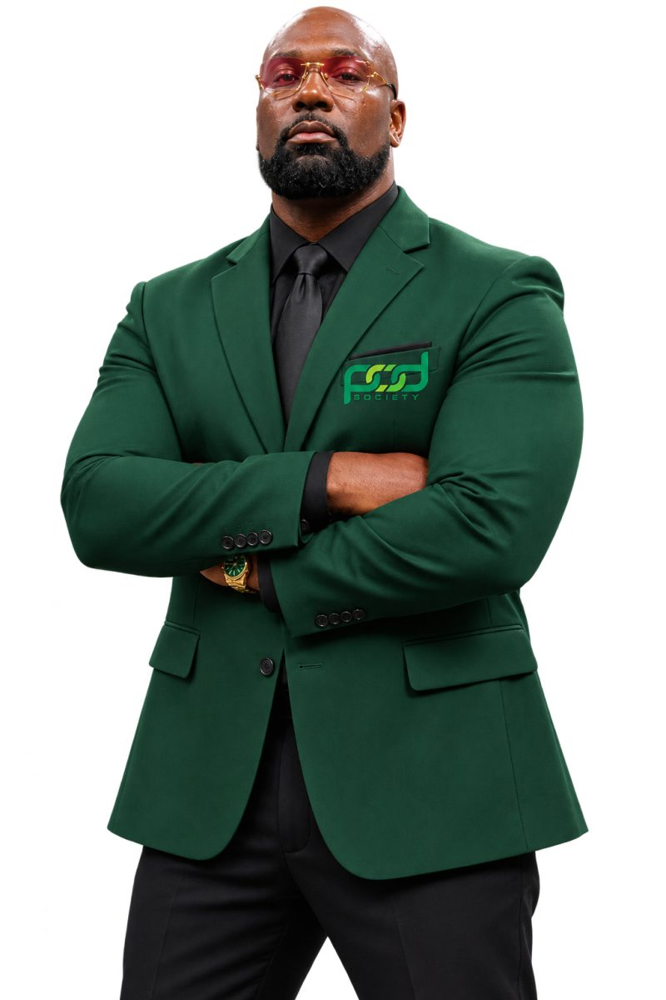
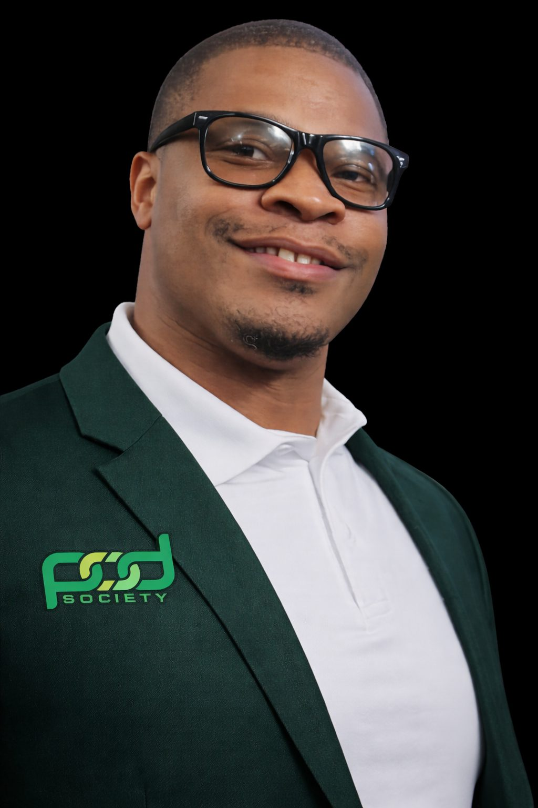
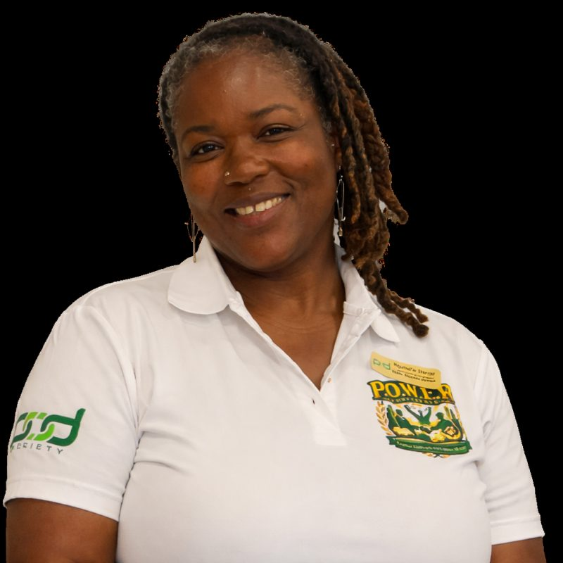
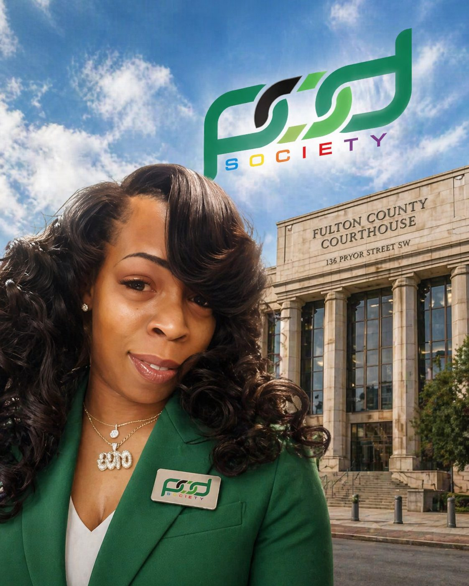

Restoring hope, rebuilding lives.
Positive Outreach Development Society, Inc. (POD Society) supports people inside correctional facilities and the communities they return to, so that fewer of them go back.
Why we exist
Recidivism has been a public safety problem for too long. Each day after incarceration brings new challenges: a place to live, a job, a record that follows you, family relationships that need rebuilding. POD Society makes the road home more manageable by giving structure, support and encouragement at every step.
We believe character is the foundation of successful reintegration. That is why rebuilding, equipping and empowering returning citizens is the heart of our mission. Change begins within, but real strength grows through guidance, support and community.
How we work
- Credible messengers. Our mentors include people whose lived experience mirrors that of the people we serve. They connect in a way others can’t, and their example shows the change is possible.
- Work inside before release. Our mentors and facilitators bring education, guidance and resources into correctional facilities, including FORGE and Mind C.A.R.E.
- Support after release. Reentry guidance, housing and employment connections, legal and parole support, and recovery partners.
- Partnership. We work with law enforcement, parole, local government, churches and grassroots organizations, because ending recidivism takes a village.
- Positivity. We believe positivity is the approach to change, and we lead with a positive example so that those behind us can see how to make one.

Executive team

Dr. Raheem
Co-founder and CEO

Octavious Holiday
Executive Director of Public Affairs

Nyshelle Daniel
Executive Director of Community Resources

Merteen Wilson
Executive Director of Legal Services
L.E.A.D.S.
Leading Examples Achieving Daily Success. Returning citizens who have risen to the challenge and now serve their communities with purpose. They lead our community engagement and show, every day, what a second chance looks like.
The L.E.A.D.S. team includes Arthur Howell and Octavious Holiday, recognized for their work bridging the gap with the City of Forest Park, and Michael Wolfolk, whose outreach focuses on gun violence prevention and emotional intelligence.
Ambassadors of Second Chances
POD Society works closely with the Georgia State Board of Pardons and Paroles. Our Ambassadors of Second Chances include Mr. Octavious Holiday, POD Society’s Executive Director of Public Affairs; Ms. Crystal Moon, Executive Director of Clemency for the Board; and Mr. Christopher Barnett, Executive Director of the Board.
From legal proceedings and parole preparation to strengthening community credibility, we stand shoulder to shoulder with our members when it matters most.
Partners
From grassroots organizations to the County Commissioner’s Office.
- Fulton County Board of CommissionersProclamation, April 4, 2026
- Georgia State Board of Pardons and ParolesSecond chances and parole preparation
- City of Forest ParkCouncilwoman LaTresa Atkins-Wells
- Forest Park Police DepartmentChief Brandon Criss
- Clayton County Sheriff’s DepartmentCommunity day, July 20, 2024
- Georgia Office of Victim ServicesVictims’ rights and reconciliation
- A Tyme to Thrive Beyond GriefAaliyah Strong; gun violence prevention
- The Life Unit, Inc.Reentry, pre-entry and intervention services
- B.A.N.G. (Believe and Never Give Up)Uplifting underserved communities
- 1Way Youth Entrepreneur CenterYouth mentorship and entrepreneurship
- MW Consulting FirmLegal services
- Walmart Spark GoodSponsor
- Midnight Basketball LeagueRecognition, August 29, 2026